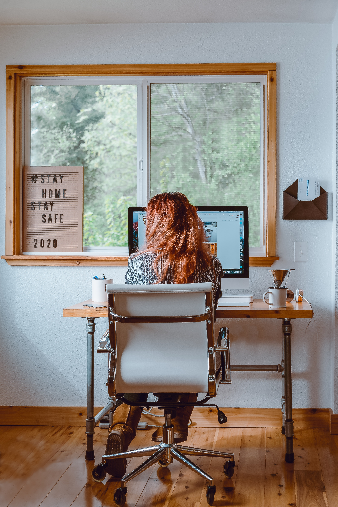

| Snack/Drink | Calories | Sugar | Image | Caffeine |
|---|---|---|---|---|
| Milk | 103 | 13g | Image | 0mg |
| Green Tea | 2.5 | 0g | image | 40mg |
| Coffee | 1 | 0g | Image | 95mg |
| Cola | 140 | 39g | Image | 34mg |
| Matcha Latte | 190 | 24g | Image | 55mg |
These are challenging times for everyone but we have a few simple tips to help you stay productive and focused. The first thing we recomend to all of our readers it to make a list of all the things you have to do. Once you write everything down put a star next to the 3 most important ones and start tackling those right away. Although it may seem scary seeing all those items on your list, if you are ablew to break them down into small and manageable chunks then you will feel much better.
One of the most distracting things for all of us at Amary Office is our phones! Somehow these things always have notifications popping up and they are so distracting for our minds. When we are trying to focus and dive deep into our work the last thing we need is another distraction.
Normally at work we are able to move around freely, pick ourselves up and grab a drink, or stop by someone's office to chat. All of these things help us move around and not freeze our bodies up. Staying active is essential to being healthy and remaining alert throughout the day. Now that we are working from home, it has never been easier to take quick breaks to stretch, do a quick walk, or even just stepping out for some sunlight. Whatever activities you choose are fine so long as you are staying active and giving your body and chance to move.
Since we are seeing the same sights every day and sitting at the same desk with the same coffee mug sometimes it is helpful to make a switch up. Breaking a routine to complete work in a new location or trying a new item for breakfast or even trying different work outfits all can help your mind have a little rest from all of the repeated activity. Give yourself flexibility because sometimes that can make all the difference.
Our last tip to stay focused while working from home would be to feed your body with whole nutrient dense food. This can make or break your productivity because food effects our moods and our appetitie throughout the day. Drinking plenty of water and being conscious of the food you are consuming can be essential to maintaining a balanced life. It is very easy nowadays to stop by the fridge 30 times in between classes or meetings to grab yet another snack, but you must resist the urge to load your body with high sugar high carb foods that make you feel even worse. Opt in for a bowl of fruit or cup of yogurt next time you get a sugar craving and you will surely be satisfied.
To start us off here are some of our top choices for exercises.